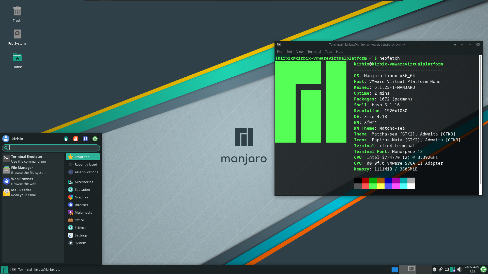

Manjaro

Manjaro gives you the power of Arch Linux without the intimidating manual setup. It comes with a graphical installer, automatic hardware detection, and a polished desktop out of the box. Updates are held back two weeks from Arch for extra stability testing, giving you rolling releases that are safer to use daily.
Desktop Environment
KDE Plasma / GNOME / Xfce
Package Manager
pacman / pamac
Latest Release
Rolling
Init System
systemd
Support Cycle
Rolling
Architecture
x86_64, ARM
Key Features
- User-friendly Arch-based distro with a graphical installer
- MHWD hardware detection, drivers installed automatically
- Pamac GUI package manager for easy software installation
- Full access to the AUR (Arch User Repository)
- Updates held back 2 weeks from Arch for extra stability
- Multiple desktop editions: KDE, GNOME, Xfce